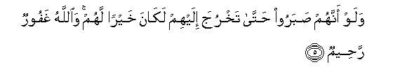
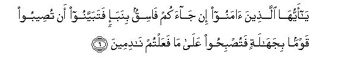
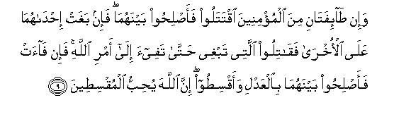
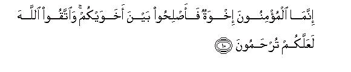
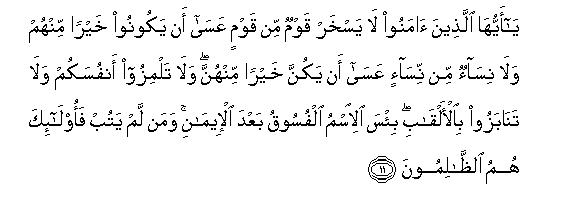
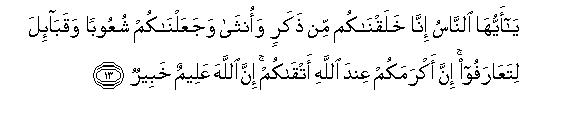
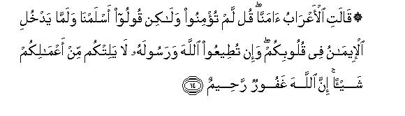
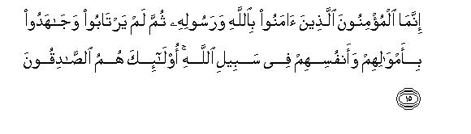
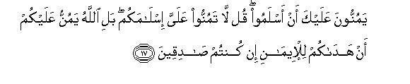
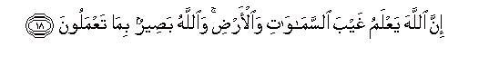

بسم الله الرحمن الرحيم
Sayyid Abul Ala Maududi - Tafhim al-Qur'an - The Meaning of the Qur'an
 49.
Surah Al Hujaraat (The Private Apartments)
49.
Surah Al Hujaraat (The Private Apartments)
The Surah takes its name from verse 4 in which the word hujurat has occurred.
Traditions show and the subject matter of the Surah also supports the same that this Surah is a collection of the commandments and instructions sent down on different occasions, which have been put together because of the relevancy of the theme. Moreover, the traditions also show that most of these commandments were sent down during the final stage of the Holy Prophet's life at Madinah. For instance, about verse 4 the commentators state that it was sent down concerning the Bani Tamim whose deputation had arrived in Madinah and started calling out to the Holy Prophet from outside the apartments (hujurat) of his wives, and according to all biographical books on the Holy Prophet's life this deputation had visited Madinah in A. H. 9. Likewise, about verse 6 a large number of the traditions of Hadith confirm that it was sent down concerning Walid bin Uqbah whom the Holy Prophet had sent to collect the zakat from the Bani al-Mustaliq, and it is well known that Walid bin Uqabah had become a Muslim on the conquest of Makkah.
The subject matter of this Surah is to teach the Muslims the manners worthy of true believers.
In the first five verses they have been taught the manners they should observe with regard to Allah and His Messenger.
Then, they have been given the instruction that it is not right to believe in every news blindly and to act according to it, without due thought. If information is received about a person, a group or a community, it should be seen carefully whether the means of the information is reliable or not. If the means is not reliable, it should be tested and examined to see whether the news is authentic or not before taking any action on it.
Then, it has been told what attitude should the other Muslims adopt in case two groups of the Muslims fall to mutual fighting.
Then the Muslims have been exhorted to safeguard against the evils that corrupt collective life and spoil mutual relationships. Mocking and taunting each other, calling others by nicknames, creating suspicions, prying into other people's affairs and back biting are the evils which are not only sins in themselves but they also corrupt society. Allah has mentioned all these evils separately and forbidden them as unlawful.
After this, the national and racial distinctions that cause universal corruption in the world have been condemned. Nations and tribes and families pride of Ancestry and their looking down upon others as inferior to themselves and their pulling down others only for the sake of establishing their own superiority is an important factor that has filled the world with injustices and tyranny. Allah in a brief verse has cut at the root of this evil by stating that all men are descendants of the same one pair and their division into tribes and communities is only for the sake of recognition, not for boasting and pride, and there is no lawful basis of one man's superiority over the other except on the basis of moral excellence.
In conclusion, the people have been told that the real thing is not the verbal Profession of the Faith but to believe in Allah and His messenger truly, to obey them in practical life and to exert sincerely with one's self and wealth in the cause of Allah. True believers are only those who adopt this attitude. As for those who profess Islam merely orally without affirmation by the heart and then adopt an attitude as if they had done someone a favor by accepting Islam, may be counted among the Muslims in the world, may even be treated as Muslims in society, but they cannot be counted as believers in the sight of Allah.

In the name of Allah, the Compassionate, the Merciful.

[1] O you who have believed, do not go in advance of Allah and His Messenger,1 and fear Allah: Allah is All-Hearing, All-Knowing.2
[2-3] O you who have believed, do not raise your voices above the Prophet's voice, nor speak to him loud as you speak loud to one another3 lest all your works be rendered void, while you do not know.4 Those who lower their voices in the presence of the Messenger of God, are, in fact, those whose hearts Allah has disposed to piety.5 For them is forgiveness and a great reward!

[4-5] O Prophet, those who call out to you from outside the apartments, most of them have no sense. If only they had had patience until you came out to them, it would be better for them.6 Allah is All-Forgiving, All-Merciful.7

[6-8] O you who have believed, if a wicked person brings you some news, inquire into it carefully lest you should harm others unwittingly and then regret what you have done.8 Knew it well that the Messenger of Allah is among you. If he were to obey you in most affairs, you would certainly be in trouble.9 But Allah has endeared the Faith to you and made it seem fair in your hearts and made disbelief, wrongdoing and disobedience abhorrent to you. Such are those who are rightly guided through Allah's grace10 and Allah is All-Knowing, All-Wise.11


[9-10] And if two parties of the believers fall to mutual fighting,12 make peace between them.13 Then if either of them transgresses against rite other, fight the one that has transgressed14 till it returns to Allah's Command.15 Then if it returns, make peace between them with justice,16 and be just because Allah loves those who do justice.17 The believers are brothers of one another; so set the relations right between your brothers,18 and fear Allah; it is expected that you will be shown mercy.

[11] O you19 who have believed, neither should men mock other men, it may be that these are better than they; nor should women mock other women, it may be that these are better than they.20 Do not taunt one another among yourselves,21 nor call one another by nicknames.22 It is an evil thing to be called by a bad name after faith.23 Those who fail to avoid this are wrongdoers.

[12] O you who have believed, avoid much suspicion, for some suspicions are sins.24 Do not spy,25 nor should any one backbite the other.26 Is there any among you who would like to eat the flesh of his dead brother?27 Nay, you yourselves abhor it. Fear Allah, for Allah is Acceptor of repentance and All-Merciful.

[13] O mankind, We created you from one man and one woman, and then divided you into nations and tribes so that you may recognize one another. Indeed, the most honorable among you in the sight of Allah is he who is the most pious of you.28 Surely, Allah is All-knowing, All-Wise.29


[14-15] The desert Arabs say, "We have believed."30 Say to them, "You have not believed: rather say, “We have submitted.”31 Faith has not yet entered your hearts. If you adopt obedience to Allah and His Messenger, He will not diminish anything from the reward of your works." Surely, Allah is All-Forgiving, All-Merciful. in fact, the true believers are those who believed in Allah and His Messenger; then they entertained no doubt and exerted their utmost in the Way of Allah with their selves and their wealth. They indeed are the truthful ones.


[16-18] O Prophet, say to those (who claim to have believed), "Are you apprising Allah of your Faith? whereas Allah knows all that there is in the heavens and the earth and has knowledge of everything." They deem it as a favor to you that they have accepted Islam. Say to them, "Do not deem your Islam as a favor to me, but rather Allah has done you a favor that He has guided you to the Faith, if you are really truthful (in your claim to have believed). Allah has the knowledge of every hidden thing in the heavens and the earth, and He sees whatever you do."
1This is the foremost and basic demand of the Faith. If the person who regards Allah as his Lord and accepts Allah's Messenger as his guide and leader. is true in his belief, he can never have the attitude that he should give his own opinion and view precedence over the decision of Allah and His Messenger, or -should adopt an independent opinion in the matters, and pass his own judgments without caring to find out whether Allah and His Messenger have given any guidance in those matters or not, and if they have given it, what it is. That is why it has been said "O believers, do not go `in advance' of Allah and His Messenger. " That is, "Do not go ahead of them, but follow behind: Do not precede them, but be subordinate to them. " This Command is, in its application and effect, a step further to verse 36 of AI-Ahzab. There it was said: `It does not behoove a believing man and a believing woman that when Allah and His Messenger have given their decision in a matter, they should exercise an Option in that matter of theirs", and here it is said that the believers should not decide their matters themselves by their own initiative, but should look for guidance in Allah's Book and His Prophet's Sunnah concerning those matters.
This Command it not confined only to individual matters of the Muslims but it also applies to their collective affairs. This is in fact the fundamental article of the Islamic Law, which can neither be set aside or ignored by a Muslim government, nor by a Muslim court, nor by a parliament. A tradition has been reported in Musnad~Ahmad, Abu Da'ud, Tirmidhi and Ibn Majah, with authentic chains of transmitters, saying that when the Holy Prophet was sending Hadrat Mu'adh bin Jabal to the Yaman as a judge, he asked him: "By what will you decide the matters?" He submitted: "By the Book of Allah. " The Holy Prophet said: "If you do not find the Command concerning a matter in the Book of Allah, what will you turn to?" He replied "To the Sunnah of Allah's Messenger. " The Holy Prophet asked "If this also fails you?" He replied: "Then I shall exert and find out a solution by myself. " Thereupon the Holy Prophet placed his hand on Hadrat Mu'adh's chest and said: "Thank God Who has helped His Messenger's deputy to adopt the way that is approved by His Messenger. " This giving of precedence to the Book of Allah and the Sunnah of His Messenger over one's own exercise to find out a solution and to turn to them first to obtain guidance is the
Thing that marks the distinction between a Muslim judge and a non-Muslim judge. Likewise, in the matter of legislation also there is absolute consensus that the first and foremost source of the law is the Divine Book and after it the Sunnah of the Messenger of Allah. Even the consensus of the entire Ummah cannot go against or remain independent of them, not to speak of the individual Muslims reasoning and endeavor to interpret the law.
2That is, "If ever you adopted an attitude of independence as against Allah and His Messenger, or gave priority to your own opinion and view over their Command, you should know that you have to deal with that God Who is hearing whatever you utter and is even aware of your secret intentions. "
3This is the etiquette that was taught to the people who sat among the audience of the Holy Prophet or came to visit him. Its intention was that the believers should treat 'the Holy Prophet with the highest respect and reverence when visiting him and talking to him. Nobody should raise his voice louder than his: the people should not be unmindful of the fact that they are addressing the Messenger of Allah, and not a common man, or a person of equal rank; therefore, there should be a marked difference between one's tone of conversation with the common people and one's tone of conversation with the Holy Prophet, and no one should talk to him in a voice louder than his.
Although this etiquette was taught for sitting in the Holy Prophet's assembly and its addressees were the people who were living in his time, the people of the later ages also should observe the same respect and reverence on the occasion when the Holy Prophet's name is mentioned, or a command of his is stated, or his sayings are explained. Besides, this verse also points out what attitude the people should adopt when talking to persons of a higher rank and status than themselves. A person's talking before the men of a higher rank in a way as he talks before his friends or the common men, is in fact a sign that he has no respect for them in his heart, and he does not recognize any difference between them and the common people.
4This shows what high position the person of the Holy Prophet occupies in Islam. No one beside the Holy Prophet, whatever his rank and status, has a position that unmannerly behavior towards him should deserve in the sight of Allah the same punishment which is, in fact, the punishment for disbelief. In respect of ordinary people it is at the most a sort of rudeness, an uncivilized conduct, but in respect of the Holy Prophet a little lack of reverence is such a grave sin as can destroy all the services of one's lifetime. For the reverence of the Holy Prophet is indeed reverence of that God Who has sent him as His Messenger and lack of reverence for him amounts to lack of reverence to God Himself.
5That is, "Only those people give due reverence to the Messenger of Allah, who have passed successfully through the tests and trials set by Allah and proved by their steadfastness that their hearts indeed possess taqwa (piety). " From this it follows automatically that the heart which is devoid of reverence for the Holy Prophet is, in fact, devoid of taqwa, and a person's raising his voice louder than the Holy Prophet's is not only an uncivilized act outwardly but also a sign of the absence of taqwa in his heart.
6The people who in the blessed time of the Holy Prophet had received training in Islamic etiquette and manners under the Holy Prophet himself had a full regard for his person. They fully realized how busy he remained in performing the mission entrusted to him by Allah; they also understood full well that during those tiresome activities he must necessarily have some time for rest, time for his important occupations and also time for attending to his domestic affairs. Therefore, they would come to visit him only at the time when he was available outside his house, and if ever they did not find him outside his living quarters among his Companions, they would sit and await his emergence and would avoid giving him the trouble of coming out of his house unless there was a special need for it. But many a time it so happened that the people from far flung areas, who had had no opportunity to receive training in good manners, would come to visit the Holy Prophet with the idea that the one who invited others to Allah and was working for the reformation of the people had no right to have rest at any time, and they had the right to visit and see him any time they pleased in the day or night and it was his duty that whenever they happened to arrive he should be ready to receive them. Some of these people who came to see the Holy Prophet from different parts of Arabia were so uncouth and impolite that they would not take the trouble to inform him of their arrival through some attendant, but would start shouting from outside the apartments of his wives to call him out. Several such incidents have been reported by the Companions in the Hadith. This sort of behavior troubled him much, but he was tolerant on account of his natural clemency. At last, Allah had to intervene, Who reproved the people for their uncivilized behavior and gave this instruction: whenever they came to see the Holy Prophet and did not find him, they should wait for him patiently until he came out to them himself, instead of shouting to call him out, from the house.
7This is, "Whatever had happened until then will be over-looked and forgiven by Allah and He will not hold those people accountable for the trouble they had been causing to His Messenger on account of His mercy and kindness, but they should not repeat such behavior in the future.
8Most of the commentators have expressed the view that this verse was sent down concerning Walid bin 'Uqbah bin Abi Mu'ait. Its background is this: When the tribe of the Bani al-Mustaliq embraced Islam, the Holy Prophet sent Walid bin `Uqbah to collect the zakat from them. When he arrived in their territory, he became scared due to some reason and without visiting the people of the tribe returned to Madinah and complained to the Holy Prophet that they had refused to pay the zakat and had even wanted to kill him. On hearing this the Holy Prophet became very angry and he made up his mind to dispatch a contingent to punish those people. According to some traditions he had dispatched the contingent, and according to others, he was about to dispatch it. In any case all agree that in the meantime the chief of the Bani al-Mustaliq, Harith bin Dirar (father of Juwairiyah, wife of the Holy Prophet), arrived at the head of a deputation, and submitted: "By God, we did not at all see Walid; therefore, there could be no question of refusing to pay the zakat and wanting to kill him. We arc steadfast to the Faith and have no intention to withhold the zakat. " At this, this verse was sent down. With a little variation in wording this incident has been related by Imam Ahmad, Abi Hatim, Tabarani, and Ibn Jarir, on the authority of Hadrat 'Abdullah bin 'Abbas, Harith bin Dirar, Mujahid, Qatadah, 'Abdur Rehman bin Abi Laila, Yazid bin Ruman, Dahhak and Muqatil bin Hayyan. In the tradition reported by Hadrat Umm Salamah this whole story has been related likewise but there is no reference to the name of Walid.
On this critical occasion when on account of believing in a baseless report a grave blunder was about to be committed, Allah gave the Muslims this guiding principle to be followed on receipt of news: 'Whenever you receive important news bearing upon a vital matter, you should not accept it immediately but should first examine the man who has brought it. If he is an evil man whose report they not be authentic normally, you should inquire into it carefully to ascertain the truth instead of accepting it and acting on it immediately." From this Divine Command An important legal principle is deduced, the sphere of application of which is very vast. According to it, it is not permissible for a Muslim government to take any action against a person or a group or a nation on the basis of the reports provided by the secret agents whose character might be doubtful. On the basis of this very principle the traditionists introduced the art of critical appraisal in the science of Hadith in order to determine the value and worth of the people through whom traditions of the Holy Prophet reached the later generations, and the jurists established this principle in the law of evidence that in a matter from which a Shari'ah value can be deduced, or a duty imposed on a person; the evidence of an evil man would be unacceptable. However, all scholars agree that as far as the common worldly matters are concerned it is not necessary to ascertain the truth of every news and the reliability of every informer. For the word used in the verse is naba'. which does not apply to every news but only to the news of consequence. That is why the jurists say that this principle does not apply in the case of ordinary matters. For example, if a person goes to visit somebody and seeks permission to enter the house, and a person comes out and conveys the permission, he can enter the house accordingly no matter whether the one conveying the permission from the master of the house was good or bad. Likewise, the scholars are also agreed that the evidence, as well as the report, of the people whose evil does not relate to lying and immorality, but they are regarded as unrighteous only on account of false beliefs, will also be acceptable. Only the falsehood of heir creed cannot be a hindrance to accepting their evidence or reports.
9This is evident from the context as well as understood by several commentators from this verse that the Holy Prophet was hesitant to take any military action against the Bani al-Mustaliq on the report given by Walid bin 'Uqbah in their case, but some of the people insisted that they should be attacked at once. At this those people were warned that they should not forget that the Holy Prophet was present among them, who understood them better than they did. Therefore, their thinking that the Holy prophet should act according to their counsel in important matters was undue boldness. For if he started acting according to what they counseled it would generally lead to blunders for which they themselves would have to suffer.
10It means this: The whole community of the believers has not committed the error that was committed by those few people who wanted the Holy Prophet to act as they counseled, and the believing community s remaining steadfast on the right path was due to the reason that Allah by His bounty and grace had endeared to them the path of the Faith and made unbelief, wrongdoing and disobedience abhorrent to them. The addressees in the two parts of this verse are two separate groups. The sentence beginning with lau yuti'ukum is not addressed to the entire class of the Companions but only to those particular Companions who were insisting that the Bani al-Mustaliq should be attacked at once, and the sentence beginning with wa lakin-nallaha . . , is addressed to the general class of the Companions who would never dare insist on their own opinion and view before the Holy Messenger of Allah, but had full faith in his leadership and remained steadfast on the path of obedience, which is, and should he, the demand of true Faith. From this it cannot be concluded that those who had insisted on their own opinion were devoid of the love of the Faith, but what becomes obvious from this is that they had become forgetful of this demand of the Faith because of which they made the error of insisting on their own opinion in the presence of the Holy Prophet. Therefore, Allah first warned them of their error, then of its evil consequences, and finally stated that the right attitude for a believer was the one that had been adopted by the generality of the Companions.
11That is, "Allah does not bestow His bounty and favor blindly, but He grants this great blessing to whomever He grants on the basis of wisdom and His knowledge that he is worthy of it. "
12Instead of saying: "When two parties of the believers fight mutually", it has been said: ¦If two parties of the believers fall to mutual fighting." From these words it by itself follows that mutual fighting is not the character of the Muslims, nor should it be. It is not expected that being the believers they would fight mutually. However, if such a thing ever happens, the procedure that follows should be adopted. Moreover, the word ta 'ifah has been used for a group instead of firqah: the words ta'ifah and firqah in Arabic are used for a large group and a small group respectively. This also shows that it is indeed a highly offensive state in the sight of Allah in which large groups of the Muslims cannot be expected to be involved.
13The recipients of this Command are all those Muslims who may not be a party to either of the groups and for whom it may be possible to try to make peace between them. In other words, Allah does not approve that the other Muslims should just sit and watch the clash when two groups of their own community have fallen to mutual fighting. But whenever such a sad situation arises all the believers should become concerned and should do whatever they can to bring about peace and reconciliation between the parties. They should urge the parties to desist from fighting; they should exhort them to fear God; their influential people should go and talk to the responsible men of the two sides, should find out the causes of the dispute and do whatever they can to effect reconciliation between them.
14That is, "The Muslims also should not allow the aggressor to continue his aggression and leave the victim alone, or, still worse, join hands with the aggressor. But their duty is that if all their efforts at reconciliation between the parties fail, they should find out as to who is in the right and who is the aggressor. Then they should join hands with the one who is in the right and fight the aggressor. As this fighting has been enjoined by Allah, it is obligatory and comes under Jihad,' it is not the fitnah (mischief) about which the Holy Prophet has said: "It is a situation in which the one standing is bettor than the one moving, and the one sitting is better than the one standing" For that fitnah implies the mutual fighting of the Muslims in which the parties might be fighting out of bigotry, or for a false sense of honor and worldly possessions and neither may be having the truth on its side. As for the fight that is undertaken in support of the group who is in the right against the aggressor, it is not taking part in the fitnah but carrying out Allah's Command. All the jurists arc agreed on its bring an obligation, and there was no difference of opinion among the Holy Prophet's Companions about its being obligatory. (AI-Jassas, Ahkam al-Qur'an). Some jurists even regard it as superior to Jihad itself and their reasoning is that Hadrat 'Ali spent the entire period of his caliphate in fighting against the rebels instead of performing Jihad against the disbelievers. (Ruh al-Ma ani). If a person argues that it was not obligatory because Hadrat `Abdullah bin `Umar and some other Companions had not participated in the wars fought by Hadrat `Ali, he would be in the wrong. Ibn 'Umar himself says: "I have never been so much grieved at heart on anything as on account of this verse as to why I did not fight the rebels as enjoined by Allah. " (Hakim, al-Mustadrik).
The Command to "fight" the aggressor does not necessarily mean that he should be fought with the weapons and killed, but it implies the use of force against him, the real object being the removal of his aggression. For this object whatever force is necessary should be used, and no more and no less force should be used than what is absolutely necessary.
The addressees of this Command are the people who have the power to repel the aggression by the use of force.
15This shows that the fighting is not meant to punish the rebel (the aggressing pang) for his rebellion (aggression), but to force him to return to the Command of Allah. Allah's Command implies that the rebel group should submit to what is right according to the Book of Allah and the Sunnah of the Messenger of Allah, and should give up the attitude and conduct that amounts to aggression according to this criterion of the truth. As soon as a rebel group becomes ready and willing to follow this Command, use of force against it should be stopped, for this is the actual object of the fighting and its target. The one who commits an excess after this would himself become the aggressor. As for this as to what is the truth and what is the aggression in a dispute according to the Book of Allah and the Sunnah of His Messenger, its determination is inevitably the job of those people of the Ummah, who have the ability to carry out research by virtue of their knowledge and insight.
16The Command is not only to make peace but to make peace with justice and equity. This shows that in the sight of Allah the peace (and reconciliation) which is brought about only to stop fighting, overlooking the distinction between the truth and falsehood, and in which pressure is used against the party that is in the right to come to terms with the aggressor, is not commendable. True peace is that which is based on justice. This alone can avert disaster and mischief; otherwise the inevitable result of pressing those in the right and encouraging the aggressors would be that the real causes of the evil would remain as they were, rather would go on adding up, and cause the mischief to appear and re-appear over and over again.
17This verse forms the actual basis of the Islamic law about the mutual fighting between the Muslims. No explanation of this law is found in the Sof the Holy Prophet except one Hadith which we shall take up below. For in the time of the Holy Prophet no war took place between the Muslims; hence nothing is found in his practice and sayings that could throw light on the commandments concerning it Afterwards when during the caliphate of Hadrat 'AIi wars took place between the Muslims themselves authentic explanation of this law became possible At that time since a large number of the Companions were still living, a detailed code of this aspect of the Islamic law was compiled in the light of their practice and statements. Hadrat 'Ali's personal example in particular has been the real source in this matter for all the jurists. Below we give a brief resume of this code:
(1) There are several forms of mutual fighting between Muslims and each has its own separate injunctions:
(a) When both the fighting groups may be the subjects of a Muslim government: In this case it is the duty of the government to make peace between them, or to decide as to who is the aggressor between them, and to compel him by use of force to revert to the truth.
(b) When the parties may be two powerful groups, or two Muslim governments, and both may be fighting for the sake of the world: In this case, the believers should absolutely refrain from taking part in the fitnah and should exhort the parties concerned to fear God and desist from fighting.
(c) When one of the belligerent parties as mentioned under (b) above may be in the right and the other the aggressor, who may not be listening to counsel nor be inclined to make peace: In this case believers should side with and support the party that is in the right against the aggressor.
(d) When one of the parties may be the subjects, who may have revolted against the government, i.e. the Muslim government: The jurists use the term "baghi"(rebel) for this very party which is guilty of rebelling.
(2) The rebels against the government may also be of several kinds:
Those who may have risen only to create chaos and confusion, and may have no legal ground for their revolt. There is consensus that against such people it is lawful for the government to wage war, and it is obligatory for the believers to side with it, no matter whether it is a just government or not.
(b) Those who may revolt against a government in order to depose it from power, and may have no legal ground for this, and may also appear to be unjust and evil. In this case, if the government is just, it is obligatory to side with it without any question, but even if it is unjust, it is obligatory to fight in order to sustain it, for there is peace and order in the country because of it.
(c) Those who may revolt against a government on the basis of a legal ground, but their ground may be false and their belief vicious and perverse, e.g. the Khwarij. In this case also a Muslim government. whether it is just or unjust, has a lawful right to fight them and it is obligatory to side with it.
(d) Those who may revolt against a just government when its head might have assumed power lawfully. In this case whether they have a legal ground or do not have any, the government in any case is justified to wage war against them and it is obligatory to side with it.
(e) Those who may revolt against an unjust government, which might have come to power by coercion and whose leaders might be wicked and the rebels might have risen to establish justice and enforce articles of the Divine Law, and they might appear to be righteous. In this case, acute difference of opinion has appeared among the jurists as to whether they should be declared the "rebels"(i.e. transgressors) and whether it is obligatory to fight them or not. This we state below briefly:
The generality of the jurists and the Ahl al-Hadith hold the view that it is unlawful to rise in revolt against a ruler whose government has once been established and there is complete peace and order in the land under him, no matter whether he is just or unjust, and he has come to power in any way whatever, except in case he commits disbelief openly. Imam Sarakhsi writes: "In a case when the Muslims are agreed on a ruler and they enjoy peace under him and the roads are safe, if a group of the Muslims rises in revolt against him, everyone who has power is under obligation to side with the ruler of the Muslims and wage war against the rebels." (Al-Mabsut, Bab al-Khwarij) Imam Nawawi writes in his commentary of Sahih Muslim:"It is forbidden to rise in revolt and fight against the Imams (i.e. the Muslim rulers) even if they are wicked and unjust." Imam Nawawi claims that there is consensus on this.
But this claim of the consensus is not correct. A large group of the jurists of Islam which includes some major scholars, declares those rising in revolt as "rebels only in case they rise in revolt against a just ruler. They do not regard as rebellion" in the Qur'anic terminology the rising in revolt of the righteous against the unjust and wicked rulers, nor declare the waging of war against them as obligatory. The view of Imam Abu Hanifah about fighting against unjust rulers is. well known among the scholars. Abu Bakr al Jassas clearly writes in his Ahkam al-Qur an that the Imam regarded this fighting not only as permissible but as obligatory in favorable conditions. (Vol. I, p. 81; Vol. II, p. 39). In Zaid bin 'Ali's revolt against the Umayyads he not only provided financial help but urged others also to do the same. (AI-Jassas, Vol I, p. 81). In Nafs al-Zakiyah's rcvolt against Mansur he went on earnestly supporting Nafs al-Zakiyah, and he declared this war as superior to a war against the disbelievers. (AI-jassas, Vol. I, p. 81; AI-Kardari, Manaqib Abi Hanifah, Vol. II, pp. 71-72). Then the view as stated by Imam Sarakhsi is the just ruler." Ibn 'Aqil and Ibn al-Jawzi from among the Hanbalis not unanimous even among the Hanafi jurists. Ibn Humam writes in Fath al-Qadir (commentary of Hedaya): "In the parlance of the jurists the rebel is he who gives up obedience of regard rising in revolt against an unjust ruler as lawful and present Hadrat Husain's revolt as an argument. (Al-Infaf, Vol. -X, Bab Qital Ahl al-Baghyi). Imam Shafe`i in his Kitab al-Um regards as rebel the one who fights against a just ruler (Vol. IV, p. 135). Imam Malik's view as cited in Al-Mudawwanah is: "If the rebels come out to fight against a just ruler, they should be forcibly opposed." (Vol. I, p. 407). Qadi Abu Bakr Ibn al-`Arabi has cited his this view in Ahkam al-Qur 'an: "When a person rises in revolt against a just ruler like 'Umar bin Abdul 'Aziz, it is obligatory to resist and repel him; as for some other kind of the ruler, he should be left alone. Allah will punish him through some other unjust person and then both of them through some third unjust person." Another saying of Imam Malik that has been cited is: "When the pledge has been sworn to a ruler, and then his brothers rise in revolt against him, they will be fought against, if he is a just ruler. As for the rulers of our tune, there is no pledge for them, for pledge to them has been taken by coercion. " Then the view of the Maliki scholars that the Qadi has cited with reference to Sahnun is: 'Fighting will be undertaken only under the just ruler, whether the just ruler is the former one or the one who has risen in revolt against him later, but if neither is just, one should keep away from both. However, if one's own self is attacked, or the Muslims are being subjected to tyranny, one should put up resistance." After citing these different views, Qadi Abu Bakr says: "We will not fight except on the side of the just ruler, whom the truth-loving people have made their head of their own free will. "
(3) If the ones rising in revolt are small in number, and may have no large party on their back, nor be possessing any substantial war equipment, the law of rebellion will not be applied against them, but they will be proceeded against under the common penal law, i.e. if they kill, they will be subjected to the law of retaliation, and if they damage property, they will be required to pay the penalties. The law of sedition is applied only against those rebels who might be powerful, and rise in revolt in large numbers and with substantial military equipment.
(4) As long as the ones rising in revolt only express their false and perverse beliefs or hostile and seditious ideas against the government or its head, they cannot be killed or imprisoned. War will be waged against them only when they actually rise in armed revolt and start shedding blood. (Al-Mabsut, Bab al-Khwarij; Fath al-Qadir, Bab al-Bighat, al-Jassas, Ahkam al-Qur an).
(5) Before starting war against the rebels they will first be invited, according to the Qur'anic instructions, to give up the way of rebellion and adopt the way of justice; if they have some doubts and objections, effort will be made to remove them; even then if they do not listen, and fighting begins from their side, force will be used to deal with them. (Fath al-Qadir,' al Jassas, Ahkam al-Qur 'an).
(6) The code of regulations that has to be observed in the war against the rebels is based on the Holy Prophet's following Command that has been related by Hakim, Bazzar and al-Jassas on the authority of Hadrat `Abdullah bin `Umar:
"The Holy Prophet asked Hadrat `Abdullah bin Mas`ud: O Ibn Umm 'Abd: Do you know what is Allah's Command concerning the rebels of this Ummah? He replied: Allah and His Messenger have the best knowledge. The Holy Prophet said: Their wounded ones will not be laid hands on and their captives will not be killed, and the one who flees, will not be pursued, and their properties will not be distributed as spoils."
The second source of this code which has been held as trust-worthy by all the jurists is the word and deed of Hadrat 'AIi. After attaining victory in the Battle of the Camel, he announced; "Do not pursue him who flees; do not attack the wounded; do not kill the captives; give shelter to him who surrenders; do not make forcible entry into the people's houses; and do not raise your hands at the women even if they are abusing and cursing you." Some of his soldiers made the demand that the opponents and their. family members be taken prisoners and distributed. At this he became furious and said: 'Who among you will take 'A'ishah, mother of the Faithful, as his share"
(7) The injunction concerning the properties of the rebels as derived from the good example of Hadrat 'AIi is that no part of it, whether it is found on the battlefield or behind them in their houses, and whether they are living or have been killed, will be declared as the spoils nor distributed among the army. However. no compensation will be necessary for the properties that have been damaged or destroyed. As soon as the war comes to an end and rebellion has been put down, their properties and belongings will be returned to them. Their weapons and conveyances, if seized during the war, will be used- against them, but will not be made the possession of the victors and distributed as the spoils; and if there is no more fear of a rebellion from them, their these things also will be returned to them. Only Imam Abu Yusuf has expressed the opinion that the government will declare them to be the spoils, (AI-Mabsut; Fath al-Qadir,' al-Jassas).
(8) Their prisoners of war, after they have pledged not to rise in rebellion again, will be set free . (Al-Mabsut).
(9) To cut off the heads of the slain rebels and to take theta about the streets is a highly undesirable thing, for this is mutilation which the Holy Prophet has strictly forbidden. When the head of a Roman patriarch was brought before Hadrat Abu Bakr, he expressed great displeasure at it, and said: "We are not here to imitate the Romans and Iranians." When it is not allowed to meet out such a treatment to the unbelievers, how much more so should it be with regard to the Muslims. (AI-Mabsut).
(10) Whatever damage might have been caused to life and property by the rebels during the war, no retaliation and recompense for it will be imposed on them after the war has come to an end and peace has been restored. Neither will there be any retaliation for a slain person nor any recompense for the lost property, so as to avoid any chance of the recurrence of the sedition. This same law was observed in the mutual fighting between the Companions. (Al-Mabsut: al.Jassas; Ibn al-'Arabi, Ahkam al-Qur 'an).
(11) After the government has recaptured the territories which had gone under the rebels and where they had established their rule and order and collected the zakat and other taxes, it will not demand the zakat and the taxes from the people once again. If the rebels have spent the money thus collected lawfully, the payers will be deemed to have paid them off lawfully in the sight of Allah as well. but if the rebels have spent the money unlawfully, it will be a matter between the payers and their God; if they so like they may pay their zakat dues once again. (Fat-h al-Qadir, al-Jassas; Ibn al-'Arabi).
(12) The decisions of the judges, who may be just and may have given the decisions according to the Shari'ah in the courts established by the rebels in the territories under them, will be up-held although the ones who appointed them might be guilty of sedition. However, if their decisions are against the Shari'ah. and they are brought before the courts of the government after the rebellion has been put down, they will not be enforced. Moreover, no warrant or summons issued by the courts established by the rebels will be acceptable in the courts of the government. (AI-Mabsut; al-Jassas).
(13) The evidence of the rebels will not be acceptable in the Islamic courts, for it is iniquitous to fight against the just. Imam Muhammad says: "As long as they do not fight and actually rise in revolt against the people of justice, their evidence will be acceptable, but when they have already fought, I will not accept their evidence" (AI-Jassas).
From these rulings it becomes plain as to what is the difference between the law of fighting against the disbelievers and of fighting against the Muslim rebels
18This verse establishes a universal brotherhood of all the Muslims of the world, and it is by virtue of this that the sort of fraternity that exists among the Muslims exists among the followers of no other religion and creed. The importance of this Command and its demands have been explained by the Holy Prophet in many of his Traditions from which one can understand its full significance and spirit.
Hadrat Jarir bin 'Abdullah says: The Holy Prophet took a pledge from Me on three things: That I will establish the Prayer; that I will continue to pay the zakat: and that I will remain a well-wisher of every Muslim. " (Bukhari: Kitab-al-Iman. According to Hadrat 'Abdullah bin Mas'ud, the Holy Prophet said: "To abuse a Muslim is sinful and to fight him disbelief." In Musnad Ahmad a tradition bearing on the same subject has also been related by Hadrat Said bin Malik on the authority of his father.
Hadrat-Abu Hurairah relates that the Holy Prophet said: "The life, property and honor of every Muslim is forbidden to every other Muslim. " (Muslim: Kitab-al-Birr was Silah; Tirmidhi: Abwab-al-Birr was-Silah).
Hadrat Abu Said Khudri and Hadrat Abu Hurairah say that the Holy Prophet said: "A Muslim is a brother to the other Muslim: he does not treat him unjustly; he does not leave him alone; and he does not dishonor him. There is no greater evil than that one should hold a Muslim in contempt." (Musnad Ahmad).
Hadrat Sahl bin Sa'd as-Sa`idi has related this saying of the Holy Prophet: "A believer's relation with the community of the believers is just like the head's relation with the body. He feels their afflictions as the head feels the pain of every part of the body." (Musnad Ahmad). In another Hadith bearing on the same subject the Holy Prophet said: "The believers' example in the matter of their mutual love, relationship and compassion with one another is of the state of the body that when a part of it is afflicted the whole of it is afflicted with fever and restlessness." (Bukhari, Muslim).
In another Hadith he is reported to have said: The believers are with one another like the bricks of a wall so that each is strengthened by the other. " (Bukhari: Kitab al-Adab; Tirmidhi; : Abwab al-Birr was-Silah).
19In the preceding two verses after giving necessary instructions about the Muslim people's mutual fighting, the believers were made to realize that by virtue of the most sacred relationship of the faith they were brothers one to another, and they should fear God and try to keep their mutual relations right. Now, in the following two verses, they are being enjoined to avoid and shun those major evils which generally spoil the mutual relationships of the people in a society. Slandering and taunting the people and harboring suspicions and spying on others are, in fact, the evils that cause mutual enmities and then lead to grave mischief. In this connection, from the commandments that are being given in the following verses and the explanations of these found in the Hadith a detailed law of libel can be compiled. The western law pertaining to libel in this regard is so defective that a person who sues another under this law may well cause some loss to his own honor. The Islamic law, on the contrary,, recognizes a basic honor for every person and gives nobody the right to attack it, no matter whether the attack is based on reality or not, and whether the person who has been attacked has a `reputation" of his own or not. Only the fact that a person has debased and humiliated the other person is enough to declare him a criminal unless, of course, it is proved. that the humiliation caused had a legal ground for it.
20Mocking does not only imply mocking with the tongue but it also includes mimicking somebody, making pointed references to him, laughing at his words, or his works, or his appearance, or his dress, or calling the people's attention to some defect or blemish in him so that others also may laugh at him. All this is included in mocking. What is actually forbidden is that one should make fun of and ridicule another, for under such ridiculing there always lie feelings of one's own superiority and the other's abasement and contempt, which are morally unworthy of a gentleman. Moreover, it hurts the other person, which causes mischief to spread in society. That is why it has been forbidden,
To make mention of the men and the women separately does not mean that it is lawful for the men to mock the women or the women to mock the men. The actual reason for making a separate mention of the two sexes is that Islam does not at all believe in mixed society. Ridiculing each other generally takes place in mixed gatherings and Islam does not permit that non-mahram males and females should meet in such gatherings and make fun of each other. Therefore, in a Muslim society it is inconceivable that the men would mock a woman, or the women would mock a man in an assembly.
21The word lamz as used in the original is very comprehensive and applies to ridiculing, reviling, deriding, jeering, charging somebody or finding fault with him, and making him the target of reproach and blame by open or tacit references. As all such things also spoil mutual relationships and create bad blood in society, they have been forbidden. Instead of saying, “Do not taunt one another", it has been said "Do not taunt yourselves", which by itself shows that the one who uses taunting words for others, in fact, taunts his own self. Obviously, a person does not use invectives against others unless he himself is filled with evil feelings and is almost in a state of bursting like a volcano. Thus, tire one who nourishes such feelings has made his own self a nest of evils before he makes others a target, Then, when he taunts others, it means that he is inviting others to taunt him. It is a different matter that the other person may evade his attacks because of a gentle nature, but he himself has opened the door to mischief so that the other may treat him likewise.
22This Command requires that a person should not be called by a name or a title which may cause him humiliation, e.g. calling somebody a sinner or a hypocrite, or calling someone a lame or blind one, or one-eyed, or giving him a nickname containing a reference to some defect or blemish in him, or in his parents, or in his family, or calling a person a Jew or a Christian even after his conversion to Islam, or giving such a nickname to a person, or a family, or a community, or a group, which may bring condemnation or disgrace on it. Only those nicknames have been made an exception from this Command, which though apparently offensive, are not intended to condemn the persons concerned, but they rather serve as a mark of recognition for them. That is why the traditionists have allowed as permissible names like Suleman al-A`mash (the weak-eyed Suleman) and Wasil' al-Ahdab (the hunch-backed Wasil) among the reporters of the Hadith. If there are several men of the same name and a particular man among them may be recognized only by a particular title or nickname of his, the title or nickname can be used, even though the title by itself may be offensive. For instance, if there are several men called `Abdullah, and one of them is blind, he may be called Abdullah the blind, for his recognition. Likewise, those titles also are excluded from this Command, which though apparently offensive, are in fact, given out of love and the people who are called by those titles themselves approve them, like Abu Hurairah (father of the kitten) and Abu Turab (father of the dust).
23That is, "It is very shameful for a believer that in spite of being a believer he should earn a name for using abusive language and for immodest behavior. If a disbeliever earns reputation for himself for mocking the people, or taunting them, or for proposing evil and offensive titles for others, it may not be a good reputation from the point of view of humanity, but it at least goes well with his disbelief. But if a person after affirming the Faith in Allah and His Messenger and the Hereafter earns reputation on account of these base qualities, it is simply regrettable.
24What is forbidden is not conjecture as such but excessive conjecture and following every kind of conjecture, and the reason given is that some conjectures are sins. In order to understand this Command we should analyze and see what are the kinds of conjecture and what is the moral position of each.
One kind of conjecture is that which is morally approved and laudable, and desirable and praiseworthy from religious point of view, e.g. a good conjecture in respect of Allah and His Messenger and the believers and those people with whom one comes in common contact daily and concerning whom there may be no rational ground for having an evil conjecture.
The second kind of conjecture is that which one cannot do without in practical life, e.g. in a law court a judge has to consider the evidence placed before him and give his decision on the basis of the most probable conjecture, for he cannot have direct knowledge of the facts of the matter, and the opinion that is based on evidence is mostly based on the most probable conjecture and not on certainty. Likewise, in most cases when one or the other decision has to be taken, and the knowledge of the reality cannot possibly be attained, there is no way oat for men but to form an opinion on the basis of a conjecture.
The third kind of conjecture, which is although a suspicion, is permissible in nature, and it cannot be regarded as a sin. For instance, if there are clear signs and pointers in the character of a person (or persons), or in his dealings and conduct, on the basis of which he may not deserve to enjoy one's good conjecture, and there are rational grounds for having suspicions against him, the Shari `ah does not demand that one should behave like a simpleton and continue to have a good conjecture about him. The last limit of this lawful conjecture, however, is that one should conduct oneself cautiously in order to ward off any possible mischief from him; it is not right to take an action against him only on the basis of a conjecture.
The fourth kind of conjecture which is, in fact, a sin is that one should entertain a suspicion in respect of a person without any ground, or should start with suspicion in forming an opinion about others, or should entertain a suspicion about the people whose apparent conditions show that they are good and noble. Likewise, this also is a sin that when there is an equal chance of the evil and goodness in the word or deed of a person, one should regard it as only evil out of suspicion. For instance, if a gentleman while leaving a place of assembly picks up another one's shoes, instead of his own, and we form the opinion that he has done so with the intention of stealing the shoes, whereas this could be possible because of oversight as well, there is no reason for adopting the evil opinion instead of the good opinion except the suspicion.
This analysis makes it plain that conjecture by itself is not anything forbidden; rather in some cases and situations it is commendable, in some situations inevitable, in some permissible up to a certain extent and un-permissible beyond it, and in some cases absolutely unlawful. That is why it has not been enjoined that one should refrain from conjecture or suspicion altogether but what is enjoined is that one should refrain from much suspicion. Then, to make the intention of the Command explicit, it has been said that some conjectures are sinful. From this warning it follows automatically that whenever a person is forming an opinion on the basis of conjecture, or is about to take an action, he should examine the case and see whether the conjecture he is entertaining is not a sin, whether the conjecture is really necessary, whether there arc sound reasons for the conjecture, and whether the conduct one is adopting on the basis of the conjecture is permissible. Everyone who fears God will certainly take these precautions. To make one's conjecture free and independent of every such care and consideration is the pastime of only those people who are fearless of God and thoughtless of the accountability -of the Hereafter.
25"Do not spy': Do not grope after the secrets of the people: do not search for their defects and weaknesses: do not pry into their conditions and affairs. Whether this is done because of suspicion, or for causing harm to somebody with an evil intention, or for satisfying one's own curiosity, it is forbidden by the Shari 'ah in every case. It does not behoove a believer that he should spy on the hidden affairs of other people, and should try to peep at them from behind curtains to find out their defects and their weaknesses. This also includes reading other people's private letters, listening secretly to private conversation, peeping into the neighbor's house, and trying to get information in different ways about the domestic life or private affairs of others. This is grave immorality which causes serious mischief in society. That is why the Holy Prophet once said in an address about those who pry into other people's affairs:
"O people, who have professed belief verbally, but faith has not yet entered your hearts: Do not pry into the affairs of the Muslims, for he who will pry into the affairs of the Muslims, Allah will pry into his affairs, and he whom Allah follows inquisitively, is disgraced by Him in his own house. " (Abu Da'ud).
Hadrat Mu'awiyah says that he himself heard the Holy Prophet say; `If you start prying into the secret affairs of the people, you will corrupt them, or at least drive them very near corruption. " (Abu Da'ud).
In another Hadith he said: "When you happen to form an evil opinion about somebody, do not pry about it. " (AI-Jassas, Ahkam al-Qur'an).
According to still another Hadith, the Holy Prophet said: "The one who saw a secret affair of somebody and then concealed it is as though he saved a girl who had been buried alive." (AI-Jassas).
This prohibition of spying is not only applicable to the individuals but also to the Islamic government. The duty of forbidding the people to do evil that the Shari`ah has entrusted to the government does not require that it should establish a system of spying to inquire too curiously into the people's secret evils and then punish them, but it should use force only against those evils which are manifested openly. As for the hidden evils spying is not the way to reform them but it is education, preaching and counseling, collective training of the people and trying to create a pure social environment. In this connection, an incident concerning Hadrat `Umar is very instructive. Once at night he heard the voice of a person who was singing in his house. He became curious and climbed the wall. There he saw wine as well as a woman present. He shouted at the man, saying: "O enemy of God, do you think you will disobey Allah, and Allah will not expose your secret?" The man replied: “Do not make haste, O Commander of the Faithful: if I have committed one sin, you have committed three sins: Allah has forbidden spying, and you have spied; Allah has commanded that one should enter the houses by the doors, and you have entered it by climbing over the wall; Allah has commanded that one should avoid entering the other people's houses without permission, and you have entered my house without my permission. " Hearing this reply Hadrat `Umar confessed his error, and did not take any action against the man, but made him to promise that he would follow the right way in future. (Abi Bakr Muhammad bin Ja`far al-Khara'iti, Makarim al-Akhlaq). This shows that it is not only forbidden for the individuals but also for the Islamic government itself to pry into the secrets of the people and discover their sins and errors and then seize them for punishment. The same thing has been said in a Hadith in which the Holy Prophet has said: `When the ruler starts searching for the causes of suspicions among the people he corrupts them" (Abu Da'ud).
The only exception from this Command are the special cases and situations in which spying is actually needed. For instance, if in the conduct of a person (or persons) some signs of corruption are visible and there is the apprehension that he is about to commit a crime, the government can inquire into his affairs; or, for instance, if somebody sends a proposal of marriage in the house of a person, or wants to enter into business with him, the other person can, inquire and investigate into his affairs for his own satisfaction.
26Ghibat (back-biting) has been defined thus: "It is saying on the back of a person something which would hurt him if he came to know of it. " This definition has been reported from the Holy Prophet himself. According to a tradition which Muslim, Abu Da'ud, Tirmidhi, Nasa'i and others have related on the authority of Hadrat Abu Hurairah, the Holy Prophet defined ghibat as follows:
"It is talking of your brother in a way irksome to him." It was asked: "What, if the defect being talked of is present in my brother ?" The Holy Prophet replied: "If it is present in him, it would be ghibat; if it is not there, it would be slandering him. "
In another tradition which Imam Malik has related in Mu'watta, on the authority of Hadrat Muttalib bin `Abdullah, "A person asked the Holy Prophet: What is ghibat? The Holy Prophet replied: It is talking of your brother in a way irksome to him. He asked: Even if it is true, O Messenger of Allah? He replied: If what you said was false, it would then be a calumny."
These traditions make it plain that uttering a false accusation against a person in his absence is calumny and describing a real defect in him ghibat; whether this is done in express words or by reference and allusion, in every case it is forbidden. Likewise, whether this is done in the lifetime of a person, or after his death, it is forbidden in both cases. According to Abu Da'ud, when Ma`iz bin Malik Aslami had been stoned to death for committing adultery, the Holy Prophet on his way back heard a man saying to his companion: "Look at this man: Allah had concealed his secret, but he did not leave himself alone till he was killed like a dog!" A little further on the way there was the dead body of an ass lying rotting. The Holy Prophet stopped, called the two men and said: "Come down and cat this dead ass." They submitted: "Who will eat it, O Messenger of Allah?" The Holy Prophet said: "A little before this you were attacking the honor of your brother: that was much worse than eating this dead ass."
The only exceptions to this prohibition are the cases in which there may be a genuine need of speaking in of a person on his back, or after his death, and This may not be fulfilled without resort to backbiting, and if it was not resorted to, a greater evil might result than backbiting itself. The Holy Prophet has described this exception as a principle, thus: "The worst excess is to attack the honour of a Muslim unjustly." (Abu Da'ud).
In this saying the condition of `unjustly" points out that doing so "with justice" is permissible. Then, in the practice of the Holy Prophet himself we find some precedents which show what is implied by "justice" and in what conditions and cases backbiting may be lawful to the extent as necessary.
Once a desert Arab came and offered his Prayer under the leadership of the Holy Prophet, and as soon as the Prayer was concluded, walked away saying: "O God, have mercy on me and on Muhammad, and make no one else a partner in this mercy beside the two of us." The Holy Prophet said to the Companions: `What do you say: who is more ignorant: this person or his camel? Didn't you hear what he said?" (Abu Da`ud). The Holy Prophet had to say this in his absence, for he had left soon after the Prayer was over. Since he had uttered a wrong thing in the presence of the Holy Prophet, his remaining quiet at it could cause the misunderstanding that saying such a thing might in some degree be lawful; therefore, it was necessary that he should contradict it.
Two of the Companions, Hadrat Mu`awiyah and Hadrat Abu Jahm, sent the proposal of marriage to a lady, Fatimah bint Qais. She came to the Holy Prophet and asked for his advice. He said: "Mu`awiyah is a poor man and Abu Jahm beats his wives much." (Bukhari, Muslim). In this case, as there was the question of the lady's future and she had consulted the Holy Prophet for his advice, he deemed it necessary to inform her of the two men's weaknesses.
One day when the Holy Prophet was present in the apartment of Hadrat 'A'ishah, a man came and sought permission to see him. The Holy Prophet remarked that he was a very bad man of his tribe. Then he went out and talked to him politely. When he came back into the house, Hadrat `A'ishah asked: "You have talked to him politely, whereas when you went out you said something different about him. " The Holy Prophet said, "On the day of Resurrection the worst abode in the sight of Allah will be of the person whom the people start avoiding because of his abusive language." (Bukhari, Muslim). A study of this incident will show that the Holy Prophet in spite of having a bad opinion about the person talked to him politely because that was the demand of his morals; but he had the apprehension lest the people of his house should consider the person to be his friend when they would see him treating him kindly, and then the person might use this impression to his own advantage later. Therefore, the Holy Prophet warned Hadrat `A'ishah telling her that he was a had man of his tribe. Once Hind bint 'Utbah, wife of Hadrat Abu Sufyan, came to the Holy Prophet and said: "Abu Sufyan is a miserly person: he does not provide enough for me and my children's needs. " (Bukhari, Muslim). Although this complaint from the wife in the absence of the husband was backbiting, the Holy Prophet permitted it, for the oppressed one' has a right that he or she may take the complaint of injustice to a person who has the power to get it removed.
From these precedents of the Sunnah of the Holy Prophet, the jurists and traditionists have deduced this principle: 'Ghibat (backbiting) is permissible only in case it is needed for a real and genuine (genuine from the Shari'ah point of view) necessity and the necessity may not be satisfied without having resort to it". Then on the basis of the same principle the scholars have declared that ghibat is permissible in the following cases:
(1) Complaining by an oppressed person against the oppressor before every such person who he thinks can do something to save him from the injustice.
(2) To make mention of the evils of a person (or persons) with the intention of reform before those who can do expected to help remove the evils.
(3) To state the facts of a case before a legal expert for the purpose of seeking a religious or legal ruling regarding an unlawful act committed by a person.
(4) To warn the people of the mischiefs of a person (or persons) so that they may ward off the evil, e g. it is not only permissible but obligatory to mention the weaknesses of the reporters, witnesses and writers, for without it, it is not possible to safeguard the Shari ah against the propagation of false reports, the courts against injustices and the common people or the students against errors and misunderstandings. Or, for instance, if a person wants to have the relationship of marriage with somebody, or wishes to rent a house in the neighborhood of somebody, of wants to give something into the custody of somebody, and consults another person, it is obligatory for him to apprise him of all aspects so that he is not deceived because of ignorance.
(5) To raise ' voice against and criticize the evils of the people who may be spreading sin and immorality and error, or corrupting the people's faith and persecuting them.
(6) To use nicknames for the people who may have become well known by those names, but this should be done for the purpose of their recognition and not with a view to condemn them. (For details, see Fat-h al-Bani, vol. X, p. 362; Sharh Muslim by An-Nawawi; Riyad us-Salihin; al-Jassas, Ahkam al-Qur an; Ruh al-Ma ani commentary on verse wa a yaghtab ba 'dukum ba 'dan).
Apart from these exceptions it is absolutely forbidden to speak ill of a person behind his back. If what is spoken is true, it is ghibat; if it is false, it is calumny; and if it is meant to make two persons quarrel, it is slander. The Shari 'ah has declared all these as forbidden. In the Islamic society it is incumbent on every Muslim to refute a false charge made against a person in his presence and not to listen to it quietly, and to tell those who are speaking ill of somebody, without a genuine religious need, to fear God and desist from the sin. The Holy Prophet has said: If a person does not support and help a Muslim when he is being disgraced and his honor being attacked, Allah also does not support and help him when he stands in need of His help; and if a person helps and supports a Muslim when his honor is being attacked and he is being disgraced, Allah Almighty also helps him when he wants that Allah should help him. (Abu Da'ud).
As for the backbiter, as soon as he realizes that he is committing this sin, or has committed it, his first duty is to offer repentance before Allah and restrain himself from this forbidden act. His second duty is that he should compensate for it as far as possible. If he has backbitten a dead person, he should ask Allah's forgiveness for the person as often as he can. If he has backbitten a living person, and what he said was also false, he should refute it before the people before whom he had made the calumny. And if what he said was true, he should never speak ill of him in future, and should ask pardon of the person whom he had backbitten. A section of the scholars has expressed the opinion that pardon should be asked only in case the other person has come to know of it; otherwise one should only offer repentance, for if the person concerned is unaware and the backbiter in order to ask pardon goes and tells him that he had backbitten him, he would certainly feel hurt.
27In this sentence Allah by likening backbiting to eating the dead brother's flesh has given the idea of its being an abomination. Eating the dead flesh is by itself abhorrent; and when the flesh is not of an animal, but of a man, and that too of one's own dead brother, abomination would be added to abomination. Then, by presenting the simile in the interrogative tone it has been made all the more impressive, so that every person may ask his own conscience and decide whether he would like to eat the flesh of his dead brother. If he would not, and he abhors it by nature, how he would like that he should attack the honor of his brother-in-faith in his absence, when he cannot defend himself and when he is wholly unaware that he is being disgraced. This shows that the basic reason of forbidding backbiting is not that the person being backbitten is being hurt but speaking ill of a person in his absence is by itself unlawful and forbidden whether he is aware of it, or not, and whether he feels hurt by it or not. Obviously, eating the flesh of a dead man is not forbidden because it hurts the dead man; the dead person is wholly unaware that somebody is eating of his body, but because this act by itself is an abomination. Likewise, if the person who is ` backbitten also does not come to know of it through any means, he will retrain unaware throughout his life that somebody had attacked his honor at a particular time before some particular people and on that account he had stood disgraced in the eyes of those people. Because of this unawareness he will not feel at all hurt by this backbiting, but his honor would in any case be sullied. Therefore, this act in its nature is not any different from eating the flesh of a dead brother.
28In the preceding verses the Muslims were addressed and given necessary instructions to safeguard the Muslim community against social"evils. In this verse the whole of mankind bas been addressed to reform it of the great evil that has always been causing universal disruption in the world, that is, the prejudices due to race, color, language, country, and nationality. On account of these prejudices man in every age has generally been discarding humanity and drawing around himself some small circles and regarding those born within those circles as his own people and those outside them as others. These circles have been drawn on the basis of accidental birth and not on rational and moral grounds. In some cases their basis is the accident of being born in a particular family, tribe, or race, and in some particular geographical region, or in a nation having a particular color or speaking a particular language. Then the discrimination between one's own people and others is not only confide to this that those who are looked upon as one's own people are shown greater love and cooperation than others, but this discrimination has assumed the worst forms of hatred, enmity, contempt and tyranny. New philosophies have been propounded for it, new religions invented, new codes of law made and new moral principles framed; so much so that nations and empires have made this distinction a permanent way of life with them and practiced it for centuries. The Jews on this very basis regarded the children of Israel as the chosen people of God and even in the practice of their religious rites looked upon the non-Jews as inferior to the Jews in rights and rank. This very discrimination gave birth to class distinctions (varnashrama) among the Hindus according to which superiority of the Brahmins was established, all other human beings came to be regarded as inferior and unclean and the shudras cast into the depths of disgrace and degradation. Every person can see for himself even in this 20th century what atrocities have been committed against the colored people in Africa and America on account of the distinction between the white and the black. The treatment that the Europeans meted out to the Red Indian race in America and to the weak nations of Asia and Africa had the same concept underlying it. They thought that the lift and property and honor of all those who had been born outside the frontiers of their own land and nation were lawful for them and they had the right to plunder and take them as their slaves and exterminate them if need be. The worst examples of how the nationalism of the western nations has turned one nation against the others and made it their bloodthirsty enemy have been seen in the wars of the recent past and are being seen even in the present time. In particular, if what was manifested by the racism of the Nazi Germany and the concept of the superiority of the Nordic race m the last World War is kept in view. One can easily judge how stupendous and devastating is the error for whose reform this verse of the Qur'an was revealed.
In this brief verse, Allah has drawn the attention of all mankind to three cardinal truths:
(1) "The origin of all of you is one and the same: your whole species has sprung up from one man and one woman: all your races that arc found in the world today are, in fact, the branches of one initial race that started with one mother and one father. In this process of creation there is no basis whatever for the divisions and distinctions in which you have involved yourselves because_ of your false notions. One God alone is your Creator. Different men have not been created by different Gods. You have been made from one and the same substance; it is not so that some men have been made from some pure and superior substance and some other men from some impure and inferior substance. You have been created in one and the same way; it is not also so that different men have been created in different ways. And you are the offspring of the same parents; it is not so that in the beginning there were many human couples which gave birth to different populations in the different regions of the world.'
(2) "In spite of being one in origin it was natural that you should be divided into nations and tribes. Obviously,. all the men on the earth could not belong to one and the same family. With the spread of the race it was inevitable that countless families should arise, and then tribes and nations should emerge from the families. Similarly, it was inevitable that after settling in different regions of the earth, there should be differences of colors, features, languages and ways of living among the people, and it was also natural that those living in the same region should be closer in affinity and those living in remote regions not so close; but this natural difference never demanded that distinctions of inequality, of high and low, of noble and mean, should be established on its basis, that one race should claim superiority over the other, the people of one color should look down upon the people of other colors, and that one nation should take preference over the ocher without any reason. The Creator had divided the human communities into nations and tribes for that was a natural way of cooperation and distinction between them. In this way alone could a fatuity, a brotherhood, a tribe and a nation combine to give birth to a common way of life and to cooperate with each other in the affairs of the world. But it was all due to satanic ignorance that the differences among mankind created by Allah to be a means of recognition, were trade a means of mutual boasting and hatred, which led mankind to every kind of injustice and tyranny.
(3) The only basis of superiority and excellence that there is, or can be, between man and man is that of moral excellence. As regards birth, all men arc equal, for their Creator is One, their substance of creation is one, and their way of creation is one, and they are descended from the same parents. Moreover, a person's being born in a particular country, nation, or clan is just accidental. Therefore, there is no rational ground on account of which one person may be regarded as superior to the other. The real thing that makes one person superior to others is that one should be more God-conscious, a greater avoider of evils, and a follower of the way of piety and righteousness. Such a man. whether he belongs to any race, any nation and any country, is valuable and worthy on account of his personal merit. And the one who is reverse of him in character is in any case an inferior person whether he is black or white, born in the east or the west.
These same truths that have been stated in this beef verse of the Qur'an, have been explained in greater detail by the Holy Prophet in his addresses and traditions. In the speech that he made on the conquest of Makkah, after going round the Ka'bah, he said:
'Thank God Who has removed from you the blemish of ignorance and its arrogance. O people, men are divided into classes: the pious and righteous, who arc honorable in the sight of Allah, and the sinful and vicious, who arc contemptible in the sight of Allah, whereas all men are the children of Adam and Adam had been created by Allah from clay." (Baihaqi, Tirmidhi).
On the occasion of the Farewell Pilgrimage, in the midst of the Tashriq days, he addressed the people, and said:
'O people, be aware: your God is One. No Arab has any superiority over a non-Arab, and no non-Arab any superiority over an Arab, and no white one has any superiority over a black one, and no black one any superiority over a white one, except on the basis of taqwa (piety). The most honorable among you in the sight, of Allah is he who is the most pious and righteous of you. Say if I have conveyed the Message to you?" And the great congregation of the people responded, saying: Yes, you have, O Messenger of Allah." Thereupon the Holy Prophet said: "Then let the one who is present convey it to those who are absent," ( Baihaqi)
In a Hadith he has said: "You are all the children of Adam, and Adam was created from the dust. Let the people give up boasting of their ancestors, otherwise they will stand more degraded than a mean insect in the sight of Allah." ( Bazzar)
In another Hadith the Holy Prophet said: "Allah will not inquire about your lineage on the Day of Resurrection. The most honorable in the sight of Allah is he who is most pious. "(Ibn Jarir)
In still another Hadith he said: "Allah dces not see your outward appearances and your possessions ,but He sees your hearts and your deeds." (Muslim, lbn Majah).
These teachings have not remained confined to words only but Islam has practically established a universal brotherhood of the believers on the basis, which does not allow any distinction on account of color, race, language, country and nationality which is free from every concept of high and low, clean and unclean, mean and respectable, which admits all human beings with equal rights, whether they belong to any race and nation, any land or region. Even the opponents of Islam have had to admit that no precedent is found in any religion and any system of the success with which the principle of human equality and unity has been given practical shape in the Muslim society, nor has it ever been found. Islam is the only religion which has welded and combined innumerable races and communities scattered in all corners of the earth into one universal Ummah.
In this connection, a misunderstanding also needs to be removed. In the case of marriage, the importance that Islamic law gives to kufv (likeness of status) has been taken by some people in the sense that some brotherhoods are noble and some mean, and matrimonial relations between them are objectionable. But this, in fact, is a wrong idea. According to the Islamic law, every Muslim man can marry every Muslim woman, but the success of the matrimonial life depends on maximum harmony and conformity between the spouses as regards habits, characteristics and ways of life, family traditions and economic and social status, so that they may get on well with each other. This is the real object of being equal and alike. Where there is unusual difference and disparity between the man and the woman in this regard, lifelong companionship will be difficult. That is why the Islamic law disapproves of such intermarriages, and not for the reason that one of the spouses is noble and the other mean, but for the reason that in case there is a clear and apparent difference and distention in status, there would be a greater possibility of the failure of the matrimonial life if the marriage relationship was established.
29That is, "This is only known to Allah as to who is really a man of high rank and who is inferior in respect of qualities and characteristics. The standards of high and low that the people have set up of their own accord, are not acceptable to and approved by Allah. Maybe that the one who has been regarded as a man of high rank in the world is declared as the lowest of the low in the final judgment of Allah, and maybe that the one who has been looked upon as a very low person here, attains to a very high rank there. The real importance is not of the honor and dishonor of the world but of the honor and dishonor that one will receive from Allah. Therefore, what man should. be most concerned about is that he should create in himself those real qualities and characteristics which make him worthy of honor in the sight of Allah."
30This does not imply all the desert Arabs but only a few particular groups of the Bedouins who had become Muslims, seeing the increasing power of Islam, thinking that they would not only remain safe from any attack by the Muslims but would also gain materially from the Islamic conquests. These people had not embraced Islam sincerely but had professed faith only verbally in order to be counted among the Muslims, and their this inner state became exposed whenever they would come before the Holy Prophet with different sorts of demands and would enumerate and mention their rights as if they had done him a great favor by accepting Islam. Traditions mention several of such tribal groups, e.g. Muzainah, Juhainah, Aslam, Ashja', Ghifar, etc. About the Bani Asad bin Khuzaimah in particular, Ibn 'Abbas and Said bin Jubair have stated that once during a drought they came to Madinah and making a demand for financial help they said to the Holy Prophet again and again: "We became Muslims without any conflict: we did not fight against you as have such and such other tribes fought." By this they clearly meant to point out that their refraining from fighting against the Messenger of Allah and their accepting Islam was a favour for which they must be rewarded by the Messenger and the Muslims. It was this same attitude and conduct of the Bedouin group living around Madinah, which has been commented upon in these verses. One can understand this appraisal better if one reads it together with vv. 90-110 of At-Taubah and vv. 11-17 of AI-Fat-h.
31Another translation of the words qulu aslamna can be; "Say: we have become Muslims. " From these words some people have concluded that in the language of the Qur'an, "Mu 'min" and "Muslim" are two opposite terms. A "Mu'min" is he who has believed sincerely and a "Muslim" he who might have accepted Islam only verbally without true faith. But, in fact, this is an absolutely wrong idea. No doubt the word iman here has been used for sincere affirmation by the heart and the word Islam for only outward and external submission but to understand them as two independent and mutually contradictory terms of the Qur'an is not correct. A study of the Qur'anic verses in which the words Islam and Muslim have been used, shows that in the Qur'anic terminology "Islam " is the name of the the Faith, which Allah has sent down for mankind; it comprehends the faith and obedience both, and a ¦MuslIm " is he who believes with a sincere heart and obeys the Commands practically. This is borne out by the following verses:
"Indeed, Islam is the only right way of life in the sight of Allah." (Al 'Imran: 19)
"And whoever adopts any other than this way of submission (Islam), that way shall not be accepted from him," (Al-'Imran: 85)
And I have approved Islam as the way of life for you." (Al-Ma'idah: 3)
`Whomever Allah wills to guide aright, He makes his breast wide open to Islam." (Al-An'am: 125)
Obviously, in these verses Islam " does not imply obedience without the Faith. Here are some other verses:
'Say (O Prophet): I have been enjoined to be the first one to affirm (faith in) Islam. "(AI-An'am: 14) '
"If they have surrendered (to Islam), they are rightly guided." (AI-'Imran: 20)
All the Prophets, who were Muslims, judged the cases according to the Torah." (AI-Ma'idah: 44)
Here, and at scores of other places, acceptance of Islam cannot mean adopting obedience without the the faith. Likewise, here are a few verses in which the word "Muslim" has occurred signifying the meaning in which it has been used repeatedly in the Qur'an:
"O you who have believed, fear Allah as He should truly be feared and see that you do not die save as true Muslim. " (AI-`Imran: 102)
`Allah had called you "Muslims" before this and has called you (by the same name) in this Qur'an, too." (AI-Hajj: 78)
"Abraham was neither a Jew nor a Christian, but he was a Muslim, sound in the faith." (AI-i-'Imran: 67)
`And remember that when Abraham and Ishmael were raising the walls of this House, they prayed: ... Lord, make us Thy Muslims and also raise from our offspring a community which should be Muslim. " (AI-Baqarah: 128)
(The Prophet Jacob's will for his children:) "O my children, Allah has chosen the same way of life for you Hence remain Muslims up to your last breath. (AI-Baqarah: 132)
After a study of these verses who can say that in these the word "Muslim" implies a person who does not believe sincerely but has accepted Islam only outwardly? Therefore, to make the claim that in the Qur'anic terminology "Islam" implies obedience without the faith and the "Muslim" in the language of the Qur'an is he who accepts Islam only outwardly is absolutely wrong. Likewise, this claim also is wrong that the words iman and mu'min have been used in the Qur'an necessarily in the sense of believing sincerely. No doubt, at most places these words have occurred to express the same meaning, but there are many places where these words have also been used for outward affirmation of the faith, and all those who might have entered the Muslim Community with verbal profession have been addressed with. "O you who have believed", no matter whether they arc the true believers, or people with a weak faith, or mere hypocrites. For a few instances of this, see Al-i-`Imran: 156, An-Nisa' :13t5, AI-Ma'idah: 54, Al-Anfal: 20-27, At-Taubah: 38, Al-Hadid: 28, As-Saff: 2.